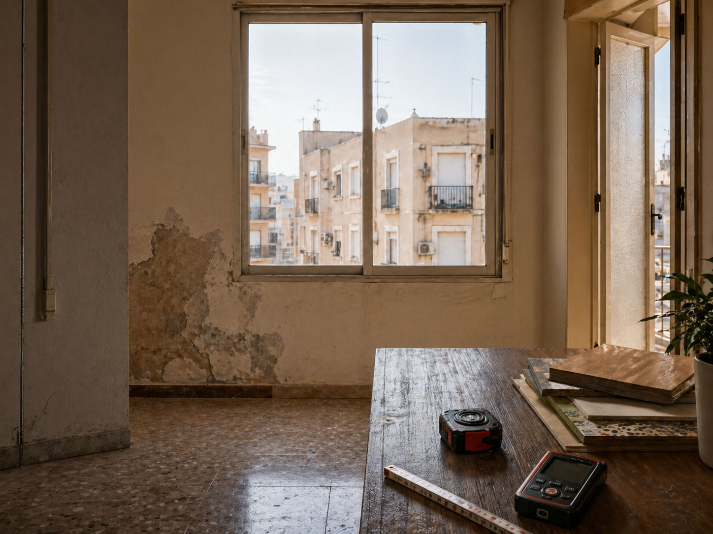
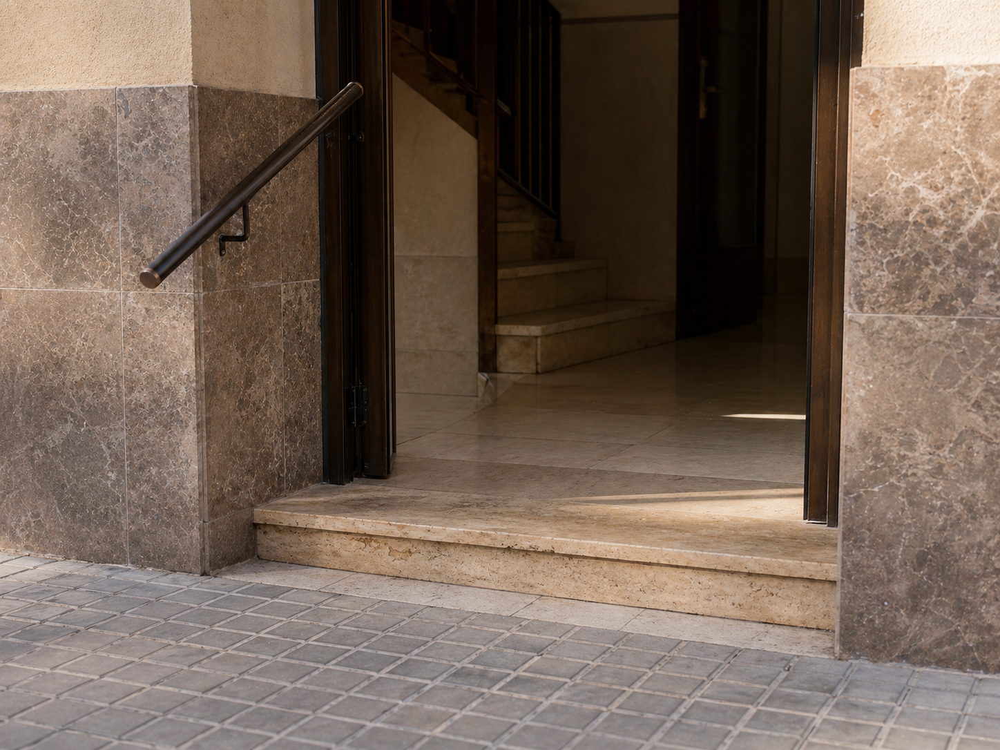
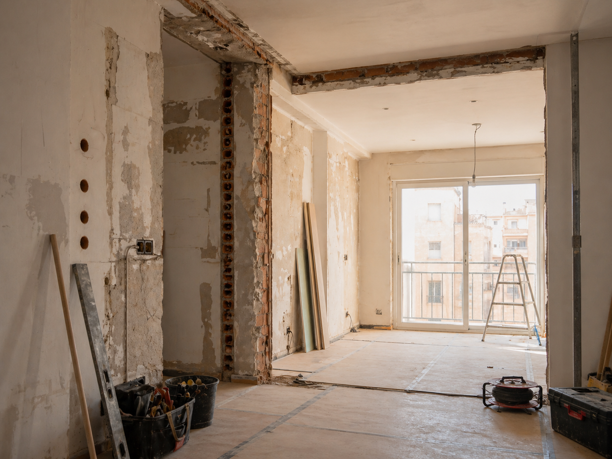
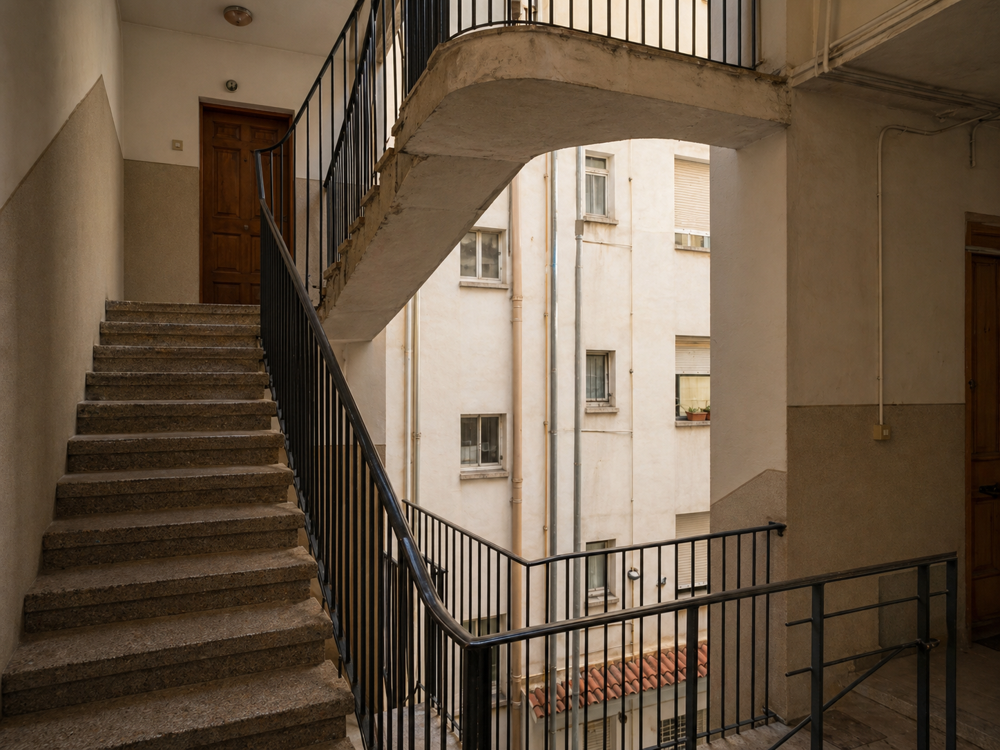

Caso real · Cubierta · Filtraciones
Cubierta transitable de baldosín catalán con filtraciones.
Por qué la cubierta tradicional de la zona requiere otra mirada antes de impermeabilizar, y qué se documenta antes de intervenir.
Leer el caso →Arquitecto técnico · Elche · Alicante
Reviso, documento y adapto edificios y viviendas para que sigan siendo habitables, funcionales y seguros. Trato directo con el técnico que estudia el caso.
Práctica
No solo cuido edificios. Mantengo ordenado su expediente técnico a lo largo del tiempo. Mi trabajo es leer su estado, ordenar lo necesario y documentar cada intervención.
— Pedro Gonzálvez Abadía, arquitecto técnico colegiado.
Situaciones
No todos los encargos parten de la misma pregunta.
Patologías visibles, fisuras, humedades, deformaciones. Pide leer con criterio antes de intervenir.
ITE, IEE, certificados, segunda ocupación. Trámites con valor real, no sólo papel.
Reformas, accesibilidad, ascensores. Adaptar con orden lo que ya está.
Servicios
Diagnóstico de fisuras, humedades, deformaciones o estado estructural. Documento claro y defendible.
Pedir revisión técnica
Inspección del edificio para detectar incidencias, priorizar actuaciones y dejar constancia técnica del estado real.
Solicitar información
Actuaciones sobre fachada, cubierta o estructura para alargar la vida útil con criterio constructivo.
Hablar de la obra
Documentación técnica para vender, alquilar o justificar el estado de un inmueble, emitida con rigor desde el principio.
Solicitar documentación
Comprobación técnica de viviendas usadas para acreditar habitabilidad y avanzar con compraventa o alquiler con seguridad.
Consultar mi caso
Adaptación de portales, accesos y recorridos comunes con foco en uso real, no sólo cumplimiento.
Pedir visita técnica
Proyecto y dirección de obra para que la reforma avance con coordinación, control y menos errores costosos.
Hablar sobre la reforma
Estudio de viabilidad e implantación en edificios existentes, con ojo en estructura, accesos y normativa.
Ver viabilidad
Cómo trabajo
Escucho su caso y reviso la necesidad real.
Indico qué servicio encaja y qué documentación hace falta.
Si procede, realizo visita técnica e inspección.
Entrego informe, certificado, proyecto o dirección de obra.
Acompaño en la siguiente decisión o trámite si el caso lo pide.
Blog
Lo que veo trabajando en edificios de la zona. Sin tecnicismos innecesarios, sin urgencias inventadas.
Ver todas las entradas →Caso real · Cubierta · Filtraciones
Por qué la cubierta tradicional de la zona requiere otra mirada antes de impermeabilizar, y qué se documenta antes de intervenir.
Leer el caso →Sobre Pedro
Soy arquitecto técnico colegiado en Alicante. Trabajo en viviendas, edificios existentes y pequeñas promociones de la zona.
Cuando un inmueble plantea un problema o un trámite se complica, lo difícil no suele ser la documentación. Lo difícil es saber qué es relevante, qué urgencia real tiene y cuál es la solución proporcionada. Ese es el valor del acompañamiento técnico.
Cada intervención queda documentada. Nada se pierde en el tiempo.
Hablemos de su caso →FAQ
En la primera toma de contacto definimos qué documentación necesita realmente su caso para no empezar por el servicio equivocado.
El ámbito principal es Elche y la provincia de Alicante. Si su inmueble está fuera, indíquemelo y valoramos el desplazamiento.
Si hay una incidencia que afecta a la seguridad o al uso del inmueble, conviene indicarlo desde el primer mensaje para priorizar la visita.
Un informe escrito con el alcance del problema, recomendación de actuación y, si procede, presupuesto orientativo de la siguiente fase.
Sí. Buena parte del trabajo son ITE/IEE, accesibilidad y patologías de fachada o cubierta para comunidades. La explicación se adapta a quien tenga que decidir.
Un informe básico tras visita suele entregarse en 7–10 días. Los casos con mediciones o coordinación con otros técnicos pueden alargarse. Le indico el plazo concreto al revisar su caso.
Contacto
Si el edificio da señales, falta documentación o toca intervenir, el primer paso es ordenar el caso. Respondo personalmente en menos de 48 horas.